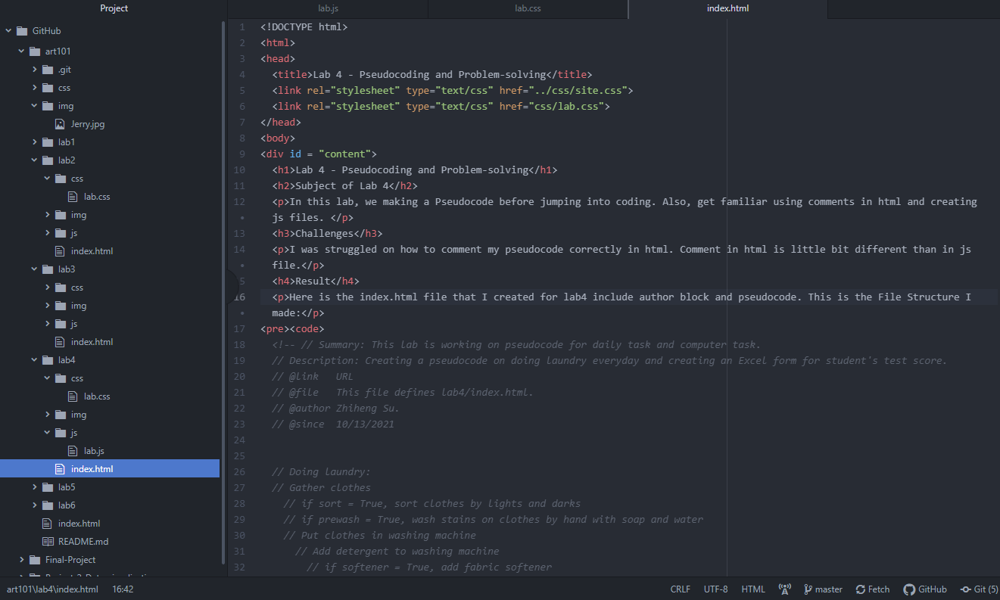
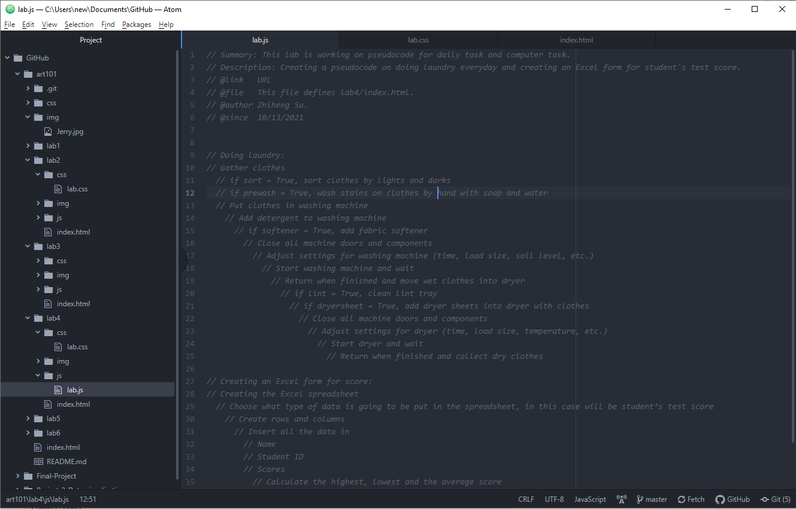
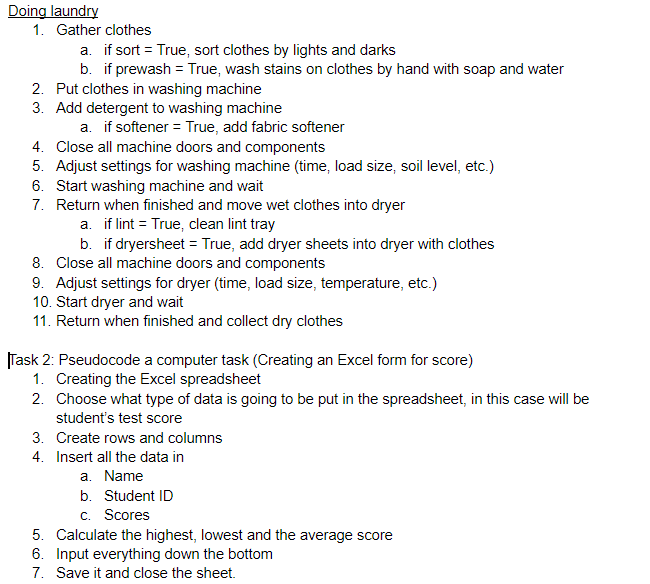
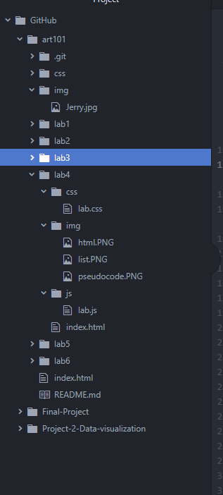

Lab 4 - Pseudocoding and Problem-solving
Subject of Lab 4
In this lab, we making a Pseudocode before jumping into coding. Also, get familiar using comments in html and creating js files.
Challenges
I was struggled on how to comment my pseudocode correctly in html. Comment in html is little bit different than in js file.
Result
Here is the index.html file that I created for lab4 include author block and pseudocode:
Here is my pseudocode:
Here is our list description:
Here is my file structure:
